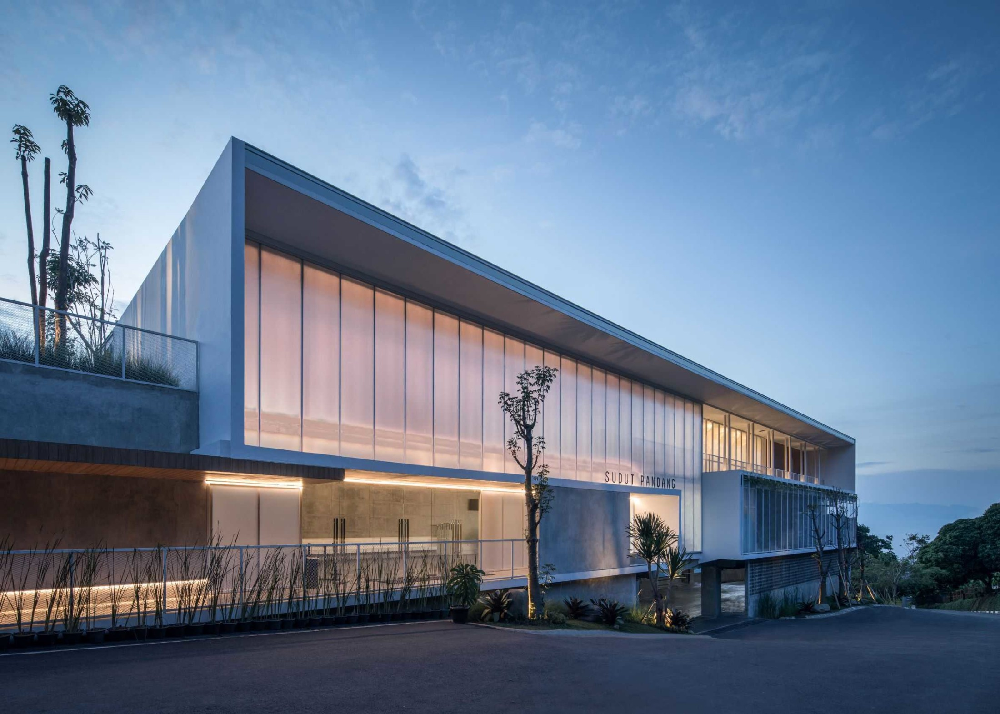
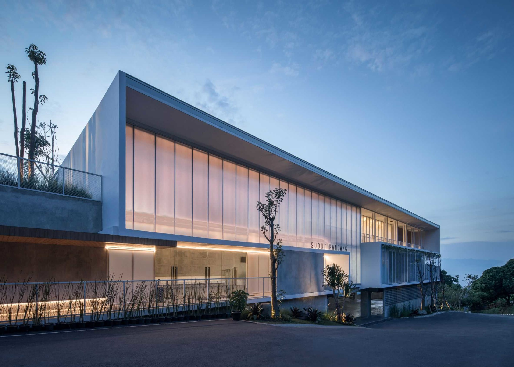

Restoran Pak Supri
Sebuah tempat kuliner eksklusif di jantung Kota Bengkulu. Dibuka pertama kali pada tahun 1998, restoran ini telah menjadi ikon kulinernya kota ini.
Dengan visi untuk menyajikan pengalaman Fine Dining yang tak tertandingi, Pak Supri telah menerima penghargaan prestisius termasuk tiga Michelin Stars selama dua dasawarsa terakhir.
Pendirian restoran ini dilatarbelakangi oleh obsesi terhadap rasa dan dedikasi terhadap keunggulan.
Koki utama kami, Chef Iwan Santoso, memiliki pengalaman yang sangat luas di berbagai dapur terkenal di seluruh dunia.
Beliau memadukan tradisi kuliner Indonesia dengan teknik modern yang revolusioner untuk menciptakan hidangan-hidangan yang menggugah selera dan menggoda mata.
Restoran kami juga telah meraih beberapa penghargaan beergengsi selain Michelin Star. Beberapa penghargaan restoran kami dapat dilihat di sini
Kami juga membanggakan diri dalam mendukung komunitas lokal. Bahan-bahan kami berasal dari petani dan produsen lokal yang dipilih dengan cermat, memastikan bahwa setiap hidangan yang disajikan adalah perpaduan sempurna dari rasa dan kualitas terbaik dari daerah ini.
 

Beberapa badge penghargaan
ESTIATORIA.GR PREMIUM AWARDS
- Tahun 2018
KEELING GOLD MEDAL AWARDS
- Tahun 2015
CONSUMER CHOICE AWARDS
- Tahun 2015
WORLD LUXURY RESTAURANT AWARDS